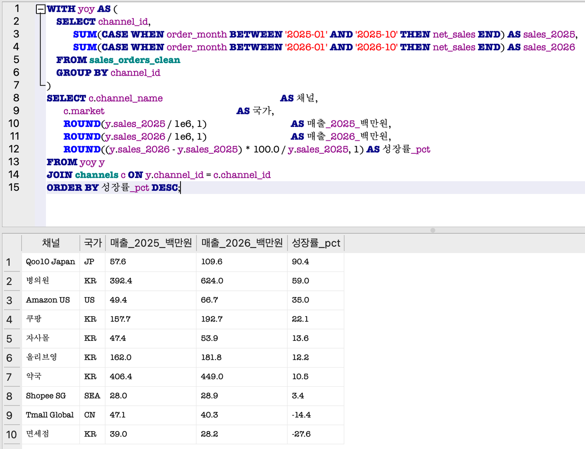

더마 화장품 데이터 정제
및 매출 분석
더마 화장품 브랜드의 상품 마스터와 주문 데이터를 SQL로 정제하고 남은 오류가 없음을 검증한 뒤, 채널별 전년 대비 성장률과 브랜드 라인·SKU별 매출총이익률을 분석했습니다.
정제 규칙 11개로 오류 1,337건을 찾아 수정했고, 정제 테이블에 같은 점검을 다시 실행한 결과 11개 규칙 모두 0건이었습니다. 원본 테이블은 그대로 보존했습니다.
정제된 데이터 기준으로 아크네 클리어 라인의 매출총이익률이 가장 낮았고(53.9%, 전사 평균 67.0%), 전사 평균 미만 SKU 상위 10개 중 5개가 이 라인이었습니다.
분석하기 전에, 이 숫자를 믿을 수 있는가?
상품 마스터와 주문 데이터에 어떤 오류가 몇 건 있고, 정제 후 남은 오류는 없는가? 정제된 데이터로 보면 채널별 성장률, 브랜드 라인·SKU별 매출총이익률은 어떻게 다른가?
진행 과정
- 오류 유형 정의 — 중복 SKU, 표기 불일치, 비정상 원가, 주문 이중 적재, 마스터 미등록 SKU 등 11가지 오류 유형을 SQL 조건으로 작성하고 각각 건수를 집계했습니다.
- 원본 보존 — 원본 테이블은 수정하지 않고 별도의 정제 테이블을 만들었습니다. 누락된 원가는 라인 평균 원가율로 추정하고 추정값임을 표시했습니다.
- 정제 전후 검증 — 같은 점검을 원본과 정제 테이블에 실행해 오류가 0건임을 확인하고, 제외된 주문라인 수를 대사했습니다.
- 분석 — 채널별 전년 대비 성장률, 브랜드 라인별 매출총이익률, 전사 평균보다 이익률이 낮은 SKU를 분석했습니다.
정제 후 11개 규칙 모두 0건
정제 규칙마다 같은 조건을 원본과 정제 테이블에 적용해 건수를 나란히 비교했습니다.

제외된 주문라인: 이중 적재 58건 + 수량 0 이하 21건 + 마스터에 없는 SKU 37건 = 116건. 순매출은 35억 3,900만 원에서 35억 3,200만 원으로 바뀌었습니다. 규제 분류가 누락된 3개 제품은 임의로 채우지 않고 '확인 필요'로 표시했습니다.
사용한 SQL: UNION ALL · scalar subqueries · COUNT(DISTINCT) · TRIM / UPPER · GLOB · IS NULL
담당 부서에 전달하는 이슈 로그
데이터를 말없이 고치는 대신, 이슈마다 조치 내용과 확인이 필요한 부서(MD, 원가, RA, 영업관리, IT/ERP)를 기록했습니다.
이슈 로그 전체 보기 (36건)
| # | 테이블 | 키 | 이슈 | 내용 | 조치 | 담당 |
|---|---|---|---|---|---|---|
| 1 | products_raw | HG-AC-003 | 중복 SKU | 2건 등록: 아크네 스팟 패치 / 아크네 스팟패치 24매 | 최신 updated_at 행 유지 | MD팀 |
| 2 | products_raw | HG-BT-001 | 중복 SKU | 2건 등록: 브라이트 톤 세럼 / 브라이트톤 세럼 | 최신 updated_at 행 유지 | MD팀 |
| 3 | products_raw | HG-CR-003 | 중복 SKU | 2건 등록: 시카 리페어 크림 / 시카리페어 크림 50ml | 최신 updated_at 행 유지 | MD팀 |
| 4 | products_raw | HG-SD-001 | 중복 SKU | 2건 등록: 선디펜스 마일드 선크림 / 선디펜스 마일드 선크림(구) | 최신 updated_at 행 유지 | MD팀 |
| 5 | products_raw | HG-SD-005 | 원가 이상 | 정가 28000 / 원가 NULL | 라인 평균 원가율로 임시 추정 | 원가팀 |
| 6 | products_raw | HG-AC-005 | 원가 이상 | 정가 14000 / 원가 -5420 | 라인 평균 원가율로 임시 추정 | 원가팀 |
| 7 | products_raw | HG-BT-004 | 원가 이상 | 정가 38000 / 원가 NULL | 라인 평균 원가율로 임시 추정 | 원가팀 |
| 8 | products_raw | HG-BC-006 | 원가 이상 | 정가 9000 / 원가 21900 | 라인 평균 원가율로 임시 추정 | 원가팀 |
| 9 | products_raw | HG-AC-004 | 규제분류 누락 | 아크네 스팟 패치 소형 | 확인필요로 표기 | RA팀 |
| 10 | products_raw | HG-SD-004 | 규제분류 누락 | 선디펜스 톤업 선크림 | 확인필요로 표기 | RA팀 |
| 11 | products_raw | HG-BC-005 | 규제분류 누락 | 세라마이드 바디로션 | 확인필요로 표기 | RA팀 |
| 12 | products_raw | HG-AC-004 | 상태값 모순 | 단종일 2025-12-31 인데 status=Active | Discontinued로 변경 | MD팀 |
| 13 | products_raw | HG-CR-002 | 표기 비표준 | category=[Serum] volume=[50ml] | 표준값으로 변환 | MD팀 |
| 14 | products_raw | HG-BC-003 | 표기 비표준 | category=[ 크림] volume=[50ml] | 표준값으로 변환 | MD팀 |
| 15 | products_raw | HG-BT-003 | 표기 비표준 | category=[토너] volume=[150mL] | 표준값으로 변환 | MD팀 |
| 16 | products_raw | HG-CR-003 | 표기 비표준 | category=[Cream] volume=[50ml] | 표준값으로 변환 | MD팀 |
| 17 | products_raw | HG-AC-002 | 표기 비표준 | category=[토너] volume=[200] | 표준값으로 변환 | MD팀 |
| 18 | products_raw | HG-CR-001 | 표기 비표준 | category=[토너] volume=[200 mL] | 표준값으로 변환 | MD팀 |
| 19 | products_raw | HG-SD-001 | 표기 비표준 | category=[Sunscreen] volume=[50ml] | 표준값으로 변환 | MD팀 |
| 20 | products_raw | HG-BC-001 | 표기 비표준 | category=[toner] volume=[200ml] | 표준값으로 변환 | MD팀 |
| 21 | products_raw | HG-BT-001 | 표기 비표준 | category=[세럼 ] volume=[30ml] | 표준값으로 변환 | MD팀 |
| 22 | products_raw | HG-BT-002 | 표기 비표준 | category=[cream] volume=[50ml] | 표준값으로 변환 | MD팀 |
| 23 | products_raw | HG-BC-002 | 표기 비표준 | category=[로션] volume=[200ML] | 표준값으로 변환 | MD팀 |
| 24 | sales_orders_raw | HG-CR-099 | 마스터 미등록 SKU | 14개 주문라인, 순매출 1356991 | 분석 제외 | 영업관리팀 |
| 25 | sales_orders_raw | HG-SD-0O1 | 마스터 미등록 SKU | 10개 주문라인, 순매출 1177451 | 분석 제외 | 영업관리팀 |
| 26 | sales_orders_raw | HG-XX-001 | 마스터 미등록 SKU | 13개 주문라인, 순매출 1142752 | 분석 제외 | 영업관리팀 |
| 27 | sales_orders_raw | CH01 | 수량 0 이하 | 3개 주문라인 | 분석 제외 (반품 여부 확인 필요) | 영업관리팀 |
| 28 | sales_orders_raw | CH02 | 수량 0 이하 | 1개 주문라인 | 분석 제외 (반품 여부 확인 필요) | 영업관리팀 |
| 29 | sales_orders_raw | CH03 | 수량 0 이하 | 6개 주문라인 | 분석 제외 (반품 여부 확인 필요) | 영업관리팀 |
| 30 | sales_orders_raw | CH04 | 수량 0 이하 | 5개 주문라인 | 분석 제외 (반품 여부 확인 필요) | 영업관리팀 |
| 31 | sales_orders_raw | CH05 | 수량 0 이하 | 1개 주문라인 | 분석 제외 (반품 여부 확인 필요) | 영업관리팀 |
| 32 | sales_orders_raw | CH06 | 수량 0 이하 | 1개 주문라인 | 분석 제외 (반품 여부 확인 필요) | 영업관리팀 |
| 33 | sales_orders_raw | CH07 | 수량 0 이하 | 1개 주문라인 | 분석 제외 (반품 여부 확인 필요) | 영업관리팀 |
| 34 | sales_orders_raw | CH08 | 수량 0 이하 | 1개 주문라인 | 분석 제외 (반품 여부 확인 필요) | 영업관리팀 |
| 35 | sales_orders_raw | CH09 | 수량 0 이하 | 2개 주문라인 | 분석 제외 (반품 여부 확인 필요) | 영업관리팀 |
| 36 | sales_orders_raw | ALL | 주문 이중 적재 | 58개 행 중복 | 중복 제거 | IT/ERP팀 |
채널별 전년 대비 성장률
2026년 1–10월 순매출을 2025년 같은 기간과 비교했습니다. CTE로 연도별 매출을 나눈 뒤 채널 정보를 조인했습니다.

- 큐텐 재팬이 가장 빠르게 성장했고(+90.4%), 병의원 채널은 증가액이 가장 컸습니다(2억 3,160만 원, +59.0%).
- 가장 큰 채널 중 하나인 약국(4억 4,900만 원)은 +10.5%로 전사 +28.0%를 밑돌았습니다.
- 티몰 글로벌(−14.4%)과 면세점(−27.6%)은 감소했습니다.
사용한 SQL: WITH (CTE) · SUM(CASE WHEN) · JOIN · ROUND
브랜드 라인·SKU별 매출총이익률
2026년 1–10월 정제 주문 데이터를 상품 마스터와 조인했습니다. 매출총이익률(GM) = (순매출 − 매출원가) ÷ 순매출.


상위 10개는 아크네 클리어 5개, 선디펜스 3개, 브라이트 톤 2개입니다. SKU별 할인율이 비슷하므로(16.1–17.9%), 이익률 격차는 할인보다 원가 구조에서 비롯된 것으로 보입니다. 2개 SKU는 추정 원가를 사용해 실제 원가 확인이 필요합니다.
사용한 SQL: JOIN · GROUP BY · WHERE BETWEEN · WITH (CTE 2개) · CROSS JOIN · AVG · ORDER BY … LIMIT
한계
- 가상 데이터이므로, 수치 자체보다 정제·검증·집계 과정을 보여주는 데 목적이 있습니다.
- 원가가 누락되었거나 비정상인 4개 SKU는 추정 원가를 사용해 실제 이익률과 다를 수 있습니다.
- 2026년 데이터가 10월까지라, 성장률은 두 해의 1–10월을 비교했습니다.
- 매출총이익률은 프로모션 비용과 채널 수수료 차감 전 기준입니다.